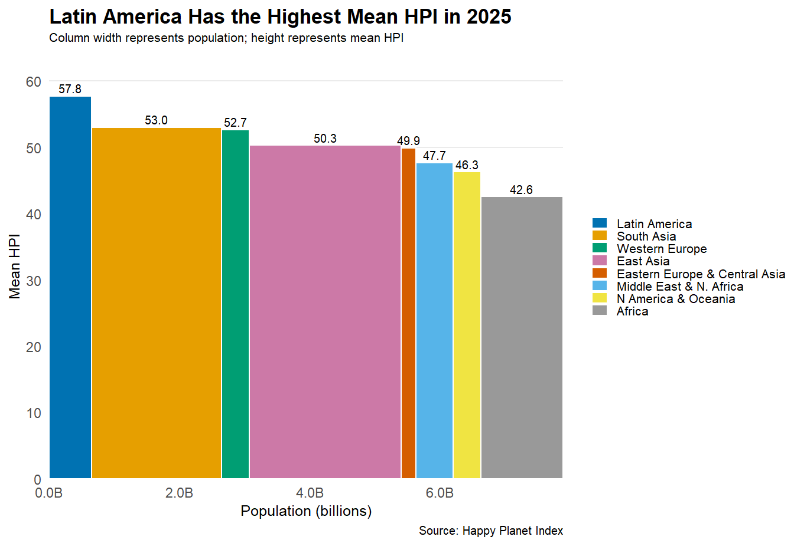
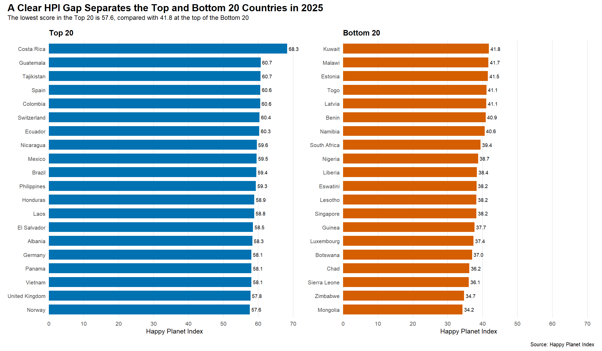
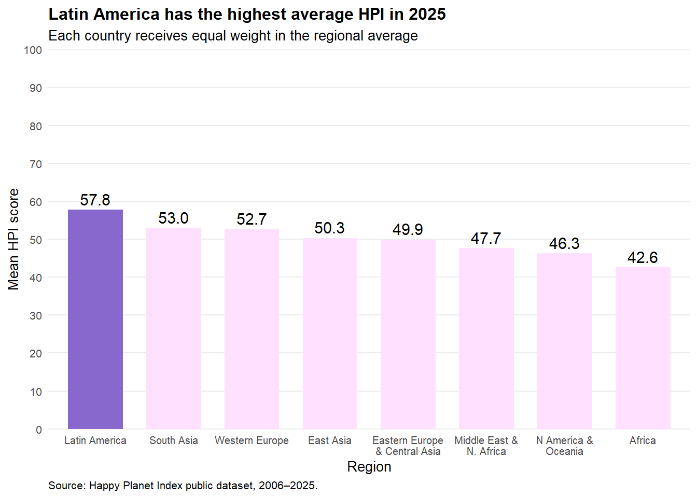

library(readxl)
library(tidyverse)
library(patchwork)
library(dplyr)
library(ggplot2)
library(gt)
library(gtExtras)
hpi <- read_excel(
"Happy-Planet-Index-2006-2025-public-data-set.xlsx",
sheet = "All Data",
skip = 1
)
hpi_2025 <- hpi %>%
filter(Year == 2025)Assignment 4: 48-Hour Chart Hackathon
Setup
Chart 1: Variable-Width Column
The 2025 HPI data were summarized by continent. The width of each column represents total population, while the height represents mean HPI across countries within each continent.
hpi_continent <- hpi_2025 %>%
group_by(Continent) %>%
summarise(
population = sum(Population, na.rm = TRUE),
mean_hpi = mean(HPI, na.rm = TRUE),
.groups = "drop"
) %>%
mutate(
continent_name = case_when(
Continent == 1 ~ "Latin America",
Continent == 2 ~ "N America & Oceania",
Continent == 3 ~ "Western Europe",
Continent == 4 ~ "Middle East & N. Africa",
Continent == 5 ~ "Africa",
Continent == 6 ~ "South Asia",
Continent == 7 ~ "Eastern Europe & Central Asia",
Continent == 8 ~ "East Asia"
)
) %>%
arrange(desc(mean_hpi)) %>%
mutate(
xmax = cumsum(population),
xmin = lag(xmax, default = 0),
xmid = (xmin + xmax) / 2,
continent_name = factor(
continent_name,
levels = continent_name
)
)ggplot(hpi_continent) +
geom_rect(
aes(
xmin = xmin,
xmax = xmax,
ymin = 0,
ymax = mean_hpi,
fill = continent_name
),
color = "white",
linewidth = 0.4
) +
geom_text(
aes(
x = xmid,
y = mean_hpi + 1.2,
label = sprintf("%.1f", mean_hpi)
),
size = 2.6
) +
scale_fill_manual(
values = c(
"#0072B2",
"#E69F00",
"#009E73",
"#CC79A7",
"#D55E00",
"#56B4E9",
"#F0E442",
"#999999"
)
) +
scale_x_continuous(
labels = scales::label_number(
scale = 1e-6,
suffix = "B",
accuracy = 0.1
),
expand = c(0, 0)
) +
scale_y_continuous(
limits = c(0, 64),
breaks = seq(0, 60, 10),
expand = c(0, 0)
) +
labs(
title = "Latin America Has the Highest Mean HPI in 2025",
subtitle = "Column width represents population; height represents mean HPI",
x = "Population (billions)",
y = "Mean HPI",
fill = NULL,
caption = "Source: Happy Planet Index"
) +
guides(
fill = guide_legend(
ncol = 1,
keywidth = grid::unit(0.38, "cm"),
keyheight = grid::unit(0.28, "cm")
)
) +
theme_minimal() +
theme(
plot.title = element_text(
size = 13,
face = "bold",
hjust = 0,
margin = margin(b = 3)
),
plot.subtitle = element_text(
size = 8,
margin = margin(b = 7)
),
axis.title = element_text(size = 9.5),
axis.text = element_text(size = 8.5),
panel.grid.minor = element_blank(),
panel.grid.major.x = element_blank(),
legend.position = "right",
legend.justification = "center",
legend.text = element_text(size = 7.8),
legend.spacing.y = grid::unit(0.07, "cm"),
legend.margin = margin(l = 7),
plot.caption = element_text(
size = 7.5,
hjust = 1,
margin = margin(t = 4)
),
plot.margin = margin(
t = 5,
r = 5,
b = 4,
l = 5
)
)
Chart 2: Table with embedded charts
The 2025 HPI data were used to identify top 15 countries based on the HPI scores. The chart represents HPI with life expectancy, life satisfaction, and ecological footprint scores.
top15 <- hpi_2025 |>
filter(!is.na(HPI)) |>
arrange(desc(HPI), Country) |>
slice_head(n = 15) |>
mutate(rank = row_number()) |>
select(rank, country = Country, hpi = HPI, life_expectancy = `Life Expectancy`, life_satisfaction = `Life Satisfaction`, footprint = `Ecological Footprint`)
hpi_bar <- function(values) {
vapply(values, function(value){
sprintf(
paste0(
),
value, "grey10", value
)
}, character(1))
} plot2 <- top15 |>
gt() |>
gt_plt_bar(
column = hpi,
color = "mediumpurple4",
scale_type = "number",
accuracy = 0.1,
keep_column = FALSE
) |>
cols_label(
rank = "Rank",
country = "Country",
hpi = "HPI",
life_expectancy = "Life expectancy (years)",
life_satisfaction = "Life satisfaction (0–10)",
footprint = "Ecological footprint (gha/person)"
) |>
fmt_number(
columns = c(life_expectancy, life_satisfaction, footprint),
decimals = 1
) |>
tab_header(
title = "Costa Rica leads 2025 Happy Planet Index",
subtitle = "Top 15 countries and their sustainable wellbeing indicators"
) |>
tab_source_note(
source_note = "Source: Happy Planet Index public dataset, 2006–2025. Data year: 2025."
)
plot2| Costa Rica leads 2025 Happy Planet Index | |||||
| Top 15 countries and their sustainable wellbeing indicators | |||||
| Rank | Country | HPI | Life expectancy (years) | Life satisfaction (0–10) | Ecological footprint (gha/person) |
|---|---|---|---|---|---|
| 1 | Costa Rica | 81.2 | 7.6 | 2.6 | |
| 2 | Guatemala | 72.9 | 6.7 | 1.8 | |
| 3 | Tajikistan | 72.1 | 6.0 | 1.0 | |
| 4 | Spain | 84.0 | 6.6 | 3.2 | |
| 5 | Colombia | 78.1 | 6.0 | 1.9 | |
| 6 | Switzerland | 84.2 | 7.1 | 3.9 | |
| 7 | Ecuador | 77.8 | 6.4 | 2.3 | |
| 8 | Nicaragua | 75.3 | 6.2 | 1.8 | |
| 9 | Mexico | 75.4 | 7.0 | 2.7 | |
| 10 | Brazil | 76.2 | 6.7 | 2.4 | |
| 11 | Philippines | 70.1 | 6.4 | 1.4 | |
| 12 | Honduras | 73.2 | 6.3 | 1.8 | |
| 13 | Laos | 69.5 | 5.9 | 0.9 | |
| 14 | El Salvador | 72.5 | 6.8 | 2.2 | |
| 15 | Albania | 80.0 | 6.0 | 2.4 | |
| Source: Happy Planet Index public dataset, 2006–2025. Data year: 2025. | |||||
Chart 3: Bar Chart
The 2025 HPI data were used to identify the 20 countries with the highest scores and the 20 countries with the lowest scores. Countries are sorted by HPI within each group.
hpi_ranked <- hpi_2025 %>%
filter(!is.na(HPI))
top20 <- hpi_ranked %>%
slice_max(
order_by = HPI,
n = 20,
with_ties = FALSE
)
bottom20 <- hpi_ranked %>%
slice_min(
order_by = HPI,
n = 20,
with_ties = FALSE
)p_top <- ggplot(
top20,
aes(
x = HPI,
y = forcats::fct_reorder(Country, HPI)
)
) +
geom_col(
fill = "#0072B2",
width = 0.72
) +
geom_text(
aes(
label = sprintf("%.1f", HPI)
),
hjust = -0.15,
size = 2.5
) +
scale_x_continuous(
limits = c(0, 72),
breaks = seq(0, 70, 10),
expand = c(0, 0)
) +
labs(
title = "Top 20",
x = "Happy Planet Index",
y = NULL
) +
theme_minimal() +
theme(
plot.title = element_text(
size = 11,
face = "bold",
margin = margin(b = 5)
),
axis.title.x = element_text(size = 9.5),
axis.text = element_text(size = 8),
panel.grid.minor = element_blank(),
panel.grid.major.y = element_blank()
)
p_bottom <- ggplot(
bottom20,
aes(
x = HPI,
y = forcats::fct_reorder(Country, HPI)
)
) +
geom_col(
fill = "#D55E00",
width = 0.72
) +
geom_text(
aes(
label = sprintf("%.1f", HPI)
),
hjust = -0.15,
size = 2.5
) +
scale_x_continuous(
limits = c(0, 72),
breaks = seq(0, 70, 10),
expand = c(0, 0)
) +
labs(
title = "Bottom 20",
x = "Happy Planet Index",
y = NULL
) +
theme_minimal() +
theme(
plot.title = element_text(
size = 11,
face = "bold",
margin = margin(b = 5)
),
axis.title.x = element_text(size = 9.5),
axis.text = element_text(size = 8),
panel.grid.minor = element_blank(),
panel.grid.major.y = element_blank()
)
p_top + p_bottom +
plot_annotation(
title = "A Clear HPI Gap Separates the Top and Bottom 20 Countries in 2025",
subtitle = "The lowest score in the Top 20 is 57.6, compared with 41.8 at the top of the Bottom 20",
caption = "Source: Happy Planet Index",
theme = theme(
plot.title = element_text(
size = 14,
face = "bold",
margin = margin(b = 3)
),
plot.subtitle = element_text(
size = 9,
margin = margin(b = 7)
),
plot.caption = element_text(
size = 7.5,
hjust = 1,
margin = margin(t = 5)
)
)
)
Chart 4: Column chart
The 2025 HPI data were used to compare HPI scores across continent level. Latin America showed the highest scores of HPI in 2025 and Africa shows the lowest score. Countries with missing HPI scores are excluded.
region_summary <- hpi_2025 |>
filter(!is.na(HPI)) |>
group_by(Continent) |>
summarise(
mean_hpi = mean(HPI),
n_countries = n(),
.groups = "drop"
) |>
mutate(
region = case_when(
Continent == 1 ~ "Latin America",
Continent == 2 ~ "N America & Oceania",
Continent == 3 ~ "Western Europe",
Continent == 4 ~ "Middle East & N. Africa",
Continent == 5 ~ "Africa",
Continent == 6 ~ "South Asia",
Continent == 7 ~ "Eastern Europe & Central Asia",
Continent == 8 ~ "East Asia"
)
) |>
arrange(desc(mean_hpi)) |>
mutate(
region = factor(region, levels = region)
)plot4 <- ggplot(
region_summary,
aes(x = region, y = mean_hpi)
) +
geom_col(
aes(fill = region == "Latin America"),
width = 0.7,
position = position_dodge(width = 0.8)
) +
scale_fill_manual(
values = c(
"TRUE" = "mediumpurple3",
"FALSE" = "thistle1"
),
guide = "none"
) +
geom_text(
aes(label = sprintf("%.1f", mean_hpi)),
vjust = -0.4,
size = 4
) +
scale_x_discrete(
labels = function(x) vapply(
x,
function(label) paste(strwrap(label, width = 16), collapse = "\n"),
character(1)
)
) +
scale_y_continuous(
limits = c(0, 100),
breaks = seq(0, 100, 10),
expand = expansion(mult = c(0, 0))
) +
labs(
title = "Latin America has the highest average HPI in 2025",
subtitle = "Each country receives equal weight in the regional average",
x = "Region",
y = "Mean HPI score",
caption = paste(
"Source: Happy Planet Index public dataset, 2006–2025."
)
) +
theme_minimal(base_size = 10) +
theme(
panel.grid.major.x = element_blank(),
panel.grid.minor = element_blank(),
plot.title = element_text(face = "bold"),
axis.text.x = element_text(size = 7.5),
plot.caption = element_text(hjust = 0)
)
plot4 
Our AI prompts and revisions are documented in prompts.md. Our synergy report is synergy report.md